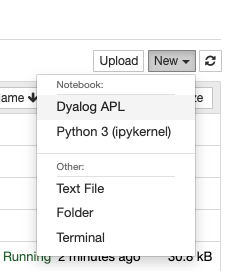
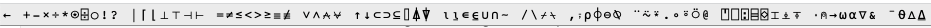

1 2 3 - 4 5 6
¯3 ¯3 ¯3
Here are my notes for day 1 of the FastAI array programming study group run by Jeremy Howard. Check out the official thread on the FastAI forum for up-to-date info. Any mistakes are mine - please let me know if you spot one.
[Jeremy gave a personal answer here. I’ve paraphrased here and there, and reframed it in the third person, hopefully without changing his intended meaning.]
Math is beautiful… but also very frustrating. It’s inconsistent, the notation is hard to lookup, and it’s hard to understand what things mean in a very abstract way when we can’t experiment with them. APL helps us understand math, thus it helps us teach math.
Jeremy teaches his daughter and her friend math. He found that there were concepts that he found very difficult to teach in traditional abstract ways. In particular, he spent an hour trying to teach them sequences and series with very little progress. He then tried it again with numpy and APL and it clicked much more easily.
In a previous live coding session, Jeremy talked about regex being a powerful notation. Powerful notations are key to furthering human intellectual development. You see this repeatedly in many domains, particularly math and physics. New ideas take hundreds of years to figure out become far simpler once someone finds the right notation. Notations grant us the ability to manipulate symbols to develop new ideas. Examples include algebra, zero, and even juggling!
APL is a very powerful notation, not just for math but for a range of topics that use similar concepts as math. For example, Aaron Hsu’s PhD used APL to build a compiler on the GPU.
APL is an independently developed branch of programming with a rich history. APL as a notation has been developed since the 1960s, largely independently to other branches of programming languages. If you never learn about it, you miss out on an entire branch of languages with an incredibly rich history. Jeremy felt that learning array programming did more for his programming skills than any other language he’s learned.
We’ll use Dyalog, an APL dialect. The first step is to install Dyalog from their download page.
Although Dyalog comes with an IDE, we’ll use Jupyter notebooks. Make sure that you’ve installed Jupyter notebook. Then install Dyalog Jupyter kernel following their installation instructions. Although their instructions say that Anaconda is required, I didn’t need it on MacOS.
Click New, then Dyalog APL.

You should now be able to write Dyalog directly in your notebook! Try it out:
1 2 3 - 4 5 6APL uses a variety of glyphs like the ¯ glyph in the previous output. To make these easier to type in your notebook, you might want to use the APL language bar. It lets you use backtick (`) as a prefix to enter glyphs. For example, <backtick>2 is a shortcut for the ¯ glyph. You can type <backtick><space> to enter a normal backtick again. It also adds a bar to the top of the page with all of the possible glyphs:

Hovering on a glyph shows a its name and keyboard shortucts:

Most tutorials teach APL bottom-up; they go really deep into one topic. FastAI instead strives for top-down teaching. Therefore, we’ll try the approach of learning all of the glyphs first, as simply and quickly as we can. This has the added benefit that the documentation will become useable, since one glyph’s documentation often contains examples that use other glyphs.
You can find a table of all of the gylphs here:

A good way to learn new concepts in APL (and in general) is to look at an example, try to predict what it’ll do before you run it, then run it and compare with your prediction. APL documentation is filled with examples which makes this approach even more powerful. The documentation will often include multiple examples as separate elements of an array.
For example, you should read the example for negate:
- 3.2 ¯7 0as three examples:
- 3.2- ¯7- 0We then went on to learn about the following. My notes are sparse at this point - I highly recommend you check out the video instead!
¯2 reads “negate 2”.f(x,y,z). You either write them as f x if there’s one argument (monadic), or x f y if there are two (dyadic).Not really. Since the precedence rules in APL are so simple, people don’t tend to use parentheses for clarity, but rather only if they’re absolutely needed.